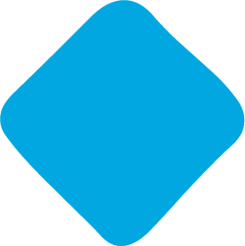
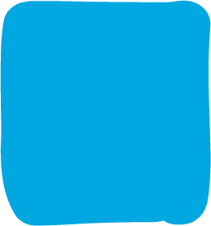
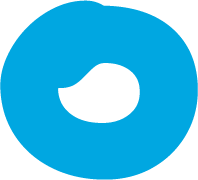

Working file, round five
Round five
Eight underlines, three package layouts, three full width work rows. Press replay on any underline.
The underline
Looking at your marks properly changed my mind about what is wrong with it.
Your approximately mark is drawn with even weight all the way along, fully rounded terminals and a gentle wave. No taper at all. What I built tapers to a point at each end, which is why the right end reads as a bulge rather than as the end of a stroke. It is not the wrong size, it is the wrong kind of mark.
Your brand doesn’t say it yet.
The taper is the problem. A brush that thins to nothing at both ends is a calligraphic stroke, and nothing else in your identity is calligraphic.
Your brand
Even weight, round ends, no SVG involved so nothing can distort at any width. Honest and slightly plain.
Your brand doesn’t say it yet.
Under one degree of tilt. Enough that it reads as drawn by a hand rather than set by a machine, not enough to look like a mistake.
Your brand doesn’t say it yet.
A single stroke of constant thickness with round caps and one gentle wave, which is exactly how your marks are drawn. This is the one I would choose.
Your brand doesn’t say it yet.
The approximately mark used as an underline. Unmistakably yours, and busy enough that it starts competing with the words.
Your brand 
The drawn file itself, stretched to the width of the phrase. Cohesive by definition, but stretching artwork drawn at one proportion to any other proportion is how logos get ruined, and the wave flattens out on a long phrase.
Your brand doesn’t say it yet.
Two bars, each with fully rounded ends, at slightly different lengths, heights and tilts. Where they overlap the edge goes ragged, which is what a marker actually does when you go over a word a second time. Nothing here can distort either: a fully rounded end stays a semicircle at any width.
Your brand doesn’t say it yet.
The same idea with a third, shorter pass through the middle, so the stroke is densest where a hand would press hardest and thins towards the ends without ever tapering to a point.
Each detail is well thought of, clean. I just want to applaud her commendable work.
Worth checking at testimonial size too, since that is where it appears most often. The raggedness has to survive being small.
On the dark band, at real size
Tell me what
you’re
building.
U4 at the size that showed the problem worst. Nothing bulges, because there is no point for it to bulge at, but it is also very even.
Tell me what
you’re building.
U7 at the same size. The overlap keeps an edge that a single shape cannot have, and it holds up at this length because nothing is being stretched: both bars end in a true semicircle whatever the phrase.
The packages
Four packages on /services. Deliverables and timelines are still to confirm, so every layout has to live with that line.
-
1
Brand Strategy
For founders with a product but no clear point of view yet.
You leave knowing what your brand says and why.
-
2
Visual Identity
For founders whose strategy is set but whose look doesn’t match it.
You leave with an identity you can use without me.
Four equal cards. The "to confirm" line sits at the bottom of each, so the thing you cannot answer yet is repeated four times.
- 01
Brand Strategy
For founders with a product but no clear point of view yet.
You leave knowing what your brand says and why.
- 02
Visual Identity
For founders whose strategy is set but whose look doesn’t match it.
You leave with an identity you can use without me.
- 03
Full Brand Identity
For founders starting from scratch.
Strategy and identity together, done once, in order.
- 04
Packaging
For products that need to stand out on a shelf and on a screen.
Priced per SKU.
All four readable at once with no scrolling and no card furniture. It also rhymes with the work index on the home page, so the site starts to have one way of listing things. The "to confirm" moves to the right where it reads as a column rather than as four apologies.
-

Brand Strategy
You leave knowing what your brand says and why.
For founders with a product but no clear point of view yet.
-

Visual Identity
You leave with an identity you can use without me.
For founders whose strategy is set but whose look doesn’t match it.
-

Full Brand Identity
Strategy and identity together, done once, in order.
For founders starting from scratch.
The promise leads and the qualifier follows, which is the right way round: people buy the outcome, not the description of themselves. Uses the same stage marks as the services section, so a package and a stage read as related.
My reading: P2. Four cards is a lot of furniture for four short offers, and the index puts the "to confirm" into a column instead of repeating it as a footnote four times. P3 if you want the packages to feel more like products than a list.
Full width rows on the work page
Five projects. On /work the whole body of work is the point, so length is not a problem the way it is on the home page.
Each project gets a side of the page and room for a sentence. The alternation stops five of them reading as a single column of the same shape.
The work at full width, with the words underneath and out of the way. The most confident of the three and the least room to explain anything. It suits covers that can carry a page on their own, which yours can.
All five on one screen, type leading and the pictures reduced to a reminder. Fast to scan and the least generous to the work itself, which is a strange thing for a portfolio to be.
My reading: F1. On the work page the job is to make someone want to open a project, and only F1 gives you both the picture and the sentence that does the persuading. F2 is more beautiful and says nothing.
What I need back
Underline: U1 to U8. Packages: P1, P2 or P3. Work page: F1, F2 or F3.